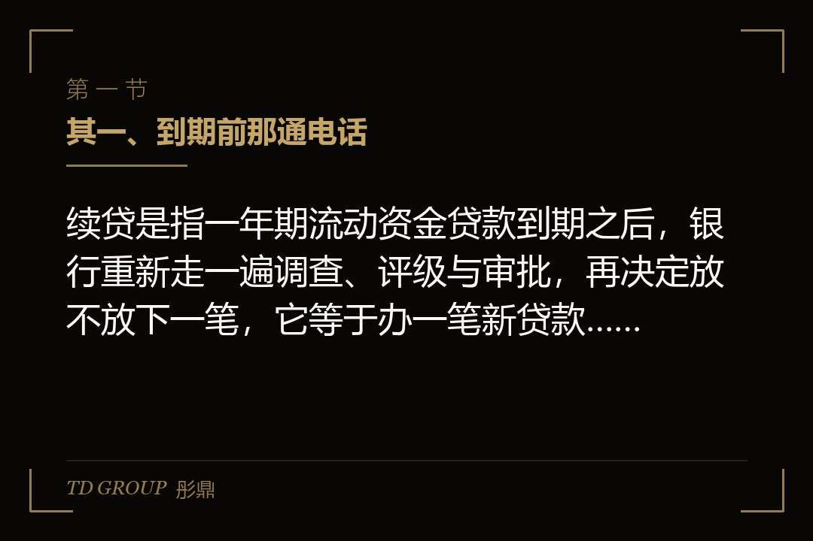
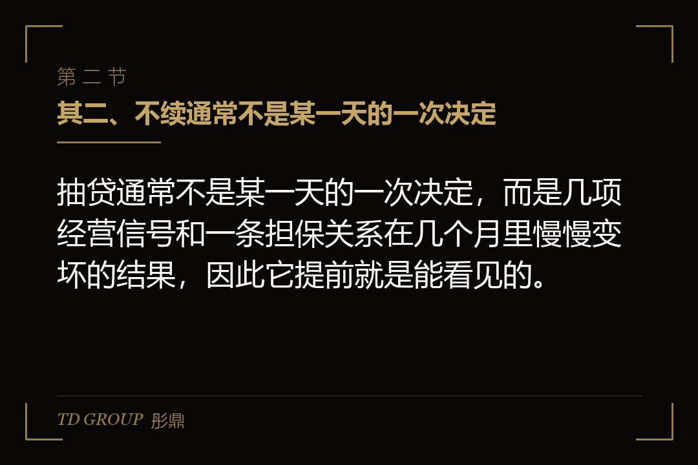
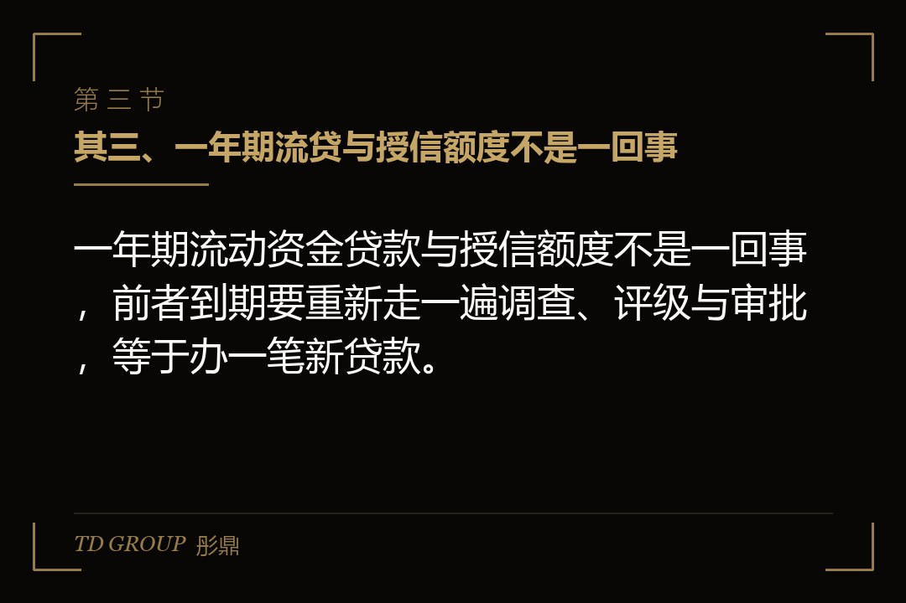

其一、到期前那通电话

结论先行：续贷是指一年期流动资金贷款到期之后，银行重新走一遍调查、评级与审批，再决定放不放下一笔，它等于办一笔新贷款，不是自动延期。
假设有家做汽车线束的厂，年营收一点二亿，手上一笔三千万的流动资金贷款六月到期。三月的一天，客户经理来电话，说今年这单先还了再说，续不续要看上头的意思。老板挂了电话才反应过来，那三千万早就不在账上，一半压在铜材和塑胶料的库存里，另一半躺在主机厂九十天的账期里。
三千万的缺口不是三千万的难。真要还，得先卖库存、再催账、然后找过桥，而每动一环，供应商和车间都会同步感觉到。原料款从月结三十天压成现结，两个班组从两班倒改成一班，招来的临时工先遣散。
更难受的是时间。到期日是一个写死的日期，而找钱、谈担保、走审批都要按月算。等到五月底才真正开始动，手上能打的牌只剩下利息最高、期限最短的那一种，而且一旦新贷没批下来，前面借的那笔正好也到期。
这类事在华尔街彤鼎俱乐部的交流里也常被问到，而真正值得问的不是银行为什么不续，是这件事能不能提前三个月就看见。答案是有，而且看见它不需要任何内部消息，只需要几张表和一点纪律。
其二、不续通常不是某一天的一次决定

结论先行：抽贷通常不是某一天的一次决定，而是几项经营信号和一条担保关系在几个月里慢慢变坏的结果，因此它提前就是能看见的。
打个比方，它更像体检报告上的箭头，不是体检那天突然得的病。银行内部对企业有一套持续的分类与预警，指标、征信、担保、账户流水这几项会陆续往下走，走到某个位置，客户经理就不是不续，而是想续也递不上去。
假设另一家做五金配件的厂，自己经营一直平稳，年年按时还息。问题出在两年前给一家互保企业签的担保，那家企业出了事，银行对整条担保圈的敞口统一压降。它自己的报表一点没变，额度照样被收。
这就是那条担保关系的意思。企业把自己和别人的风险绑在一起，风险就会双向流动，而且传过来的那一头，你往往要很晚才知道。老板能控制的只有签不签那份担保，以及签了之后多久重新看一遍。
所以这一篇按能管的顺序讲：续贷的真实结构、什么信号会让银行不续、无还本续贷这道安排能缓解什么、真被抽贷时怎么排，以及老板自己能查的几张表。
其三、一年期流贷与授信额度不是一回事

结论先行：一年期流动资金贷款与授信额度不是一回事，前者到期要重新走一遍调查、评级与审批，等于办一笔新贷款。
授信额度是银行给你划的一个上限，在这个上限里可以开承兑、开信用证、提流贷。单笔流贷是在这个上限里实际提出来的那一笔钱，有自己的起息日和到期日。上限还在，不等于这一笔能自动往后滚。
到期之后银行要重新做的事，和当初办这一笔时差不了多少：重新收集报表与流水、重新做客户评级、重新核抵押物、重新上报审批。审批链条走完需要时间，中间任何一环要补材料，时间还要再往后推。
所以提前量决定生死。通常建议留出三到六个月的提前量，具体长短看你和这家行的往来密度、担保结构复杂不复杂、抵押物要不要重新评估；行业与规模不同差别很大，但有一条是硬的，别拖到到期当月才动。
提前量真正的用处不只是赶审批，是留出谈判空间。提前三个月开口，你可以谈期限、谈担保替换、谈额度结构。提前两周开口，你只能回答一个问题，这笔钱还得了还不了。
其四、什么信号会让银行不续
结论先行：银行不续的常见信号有六类：经营与财务指标走弱的方向、征信与涉诉记录、抵押物估值下降、行业与授信政策调整、担保圈传染、回款不再走本行。
头一类是经营与财务指标的方向。毛利率连续几个季度往下走、存货与应收账款周转天数拉长、经营性现金流与利润长期反向，银行看的不是某一期好不好看，是这条线的方向。
第二类是征信与涉诉。企业征信上出现关注类、逾期、展期记录，或者被起诉、被执行、被列入失信名单，都会直接改变评审结论；法定代表人和实际控制人个人的征信与被执行记录，同样会被纳入判断。
第三类是抵押物估值下降。假设厂里那块工业用地所在片区这两年成交价下行，评估报告一出，可贷额度随之缩水，银行会要求补抵押或者压降敞口，而补抵押这件事往往又牵出股东个人的资产。
第四类是行业与授信政策调整。银行总行对某个行业收紧名单、对某类业务设上限，支行即使认可这家企业也递不上去。这一类和企业自身经营无关，但落到头上是一样的结果。
第五类是担保圈上传染过来的风险，前面那家五金配件厂就是这一类的典型：自己的报表一年没变，额度照样被收，理由却写在别人的资产负债表上。
第六类是回款不再走本行。假设有家做出口配件的厂，为方便结汇把主要回款挪到了另一家银行，本行账户上只剩零星代发工资的记录。银行看不到流水，就只能按最保守的口径去猜，猜出来的结论通常不会好看。
这六类里，企业自己动手的空间主要在后面几类：把回款归行做回去、把对外担保理清楚、把抵押物的评估情况随时掌握。前三类靠的是提前知道，知道得越早，能谈的余地越大。
其五、无还本续贷缓解的是哪一道坎
结论先行：无还本续贷是监管部门推动的一项续贷安排，缓解的是先筹钱还旧这道坎，它不是银行必须续的承诺。
它的适用对象从小微企业阶段性扩大到了中型企业，这一点有明确的政策方向，具体范围、条件与执行期限以监管部门现行文件为准，各行落地时还会有自己的细则。
前提大致是三件事：企业仍然正常经营、原贷款用途合规、续作时担保不弱化。三条里任何一条不成立，这道安排就走不通，因为它解决的是还旧这道手续，不是企业的经营质量。
走通之后的效果很具体：不必先去市场上借一笔高价短钱把旧贷还掉，银行直接签新的借款合同接上。符合条件的续贷一般不作为逾期记录上报征信，这一点同样以现行文件与各行操作为准。
但它不承诺三件事。不承诺额度不变，该压降的照样压降；不承诺利率不变，定价按当时的规则重谈；不承诺一定批，审批该走的程序一道都不会少。那家线束厂最终拿到了续作，额度从三千万降到两千万，缺口还是得自己填。
其六、真的被抽贷时，先把这三件事排上
结论先行：被抽贷之后要排的三件事是：把到期日错开、准备备用渠道、把与银行的沟通节奏固定下来，顺序不能颠倒。
错开到期日排在最前面。假设那家线束厂有三笔贷款，全都压在六月，一抽就是三千万同时到期。把它改成三到四个月各到期一笔，单笔压力立刻降下来，而且每一笔都有单独去谈的空间。
备用渠道跟着备。应收账款保理可以把账期里的钱提前拿出来，设备售后回租可以把已经买下的机器再变成一笔现金，票据解决的是更短期限的缺口。这三样的具体做法，站上另有专篇分别讲。
沟通节奏排在末位但一样要固定。按月或者按季主动把经营数据发给客户经理，遇到大客户流失、主要设备检修、订单推迟这类异常，提前说明而不是等他来问。银行最怕的不是数字变差，是数字变差而自己不知道。
末了这一句必须说过桥资金：它的成本高、期限短，而且一旦新贷落空就是双杀，旧贷已经还了，新贷没批下来，中间借的那笔钱到期日却到了。它可以作为兜底的一道备用，不宜当成默认方案。
其七、老板自己能查的几张表
结论先行：老板自己就能查的有五张表：企业征信报告、担保余额清单、账户流水与回款归行、贷款到期时间表、抵押物清单。
企业征信报告看四样：全部授信机构的敞口总额、已用余额与剩余额度、有没有关注类或者逾期记录、以及最近被查询的次数。查询次数多了本身就是信号。频率上一季度拉一次，融资前再拉一次。
担保余额清单看的是对外担保的笔数、金额和对象，重点核有没有已经出险或者经营明显恶化的那一家。这张表要按月更新，因为它变化最快，也最容易在老板不知情的情况下被签出去。
账户流水与回款归行看两件事：主要客户的回款是不是还在本行账户上走、结算占比有没有明显下滑。这张表按月看，同时它也是跟银行谈续贷时最有用的那一份材料。
贷款到期时间表把未来十二个月每个月要还的本金列出来，按周更新一次，重点看有没有某一个月集中到期。抵押物清单则列明每处抵押物的评估价与评估到期日，按年核一次，片区价格变动大的时候随时核。
其八、把结构做成不依赖一家银行
结论先行：把融资结构做成不依赖一家银行，靠的是期限错开、渠道分散，以及债权与股权两类资金的搭配。
期限错开是把短贷、循环额度、中期资金按年到月排开，避免任何一个月出现大额集中到期。渠道分散是不要让一家行承担全部敞口，同时也不要把非银渠道全部留到出事之后才去谈。
债权与股权的搭配解决的是另一件事：银行看的是还款来源，讲的是能不能还上；股权资金看的是增长与结构，讲的是凭什么值这个价。两条腿走路的企业，遇到授信收缩时手上不会只剩一条路。股权融资的工具与条款，站上再融资工具箱那篇另有展开。
这件事的落点其实很朴素：融资是一件要按年管的事，不是到期那个月才办的事。彤鼎集团（香港）有限公司给企业做融资结构梳理时，头一件事通常就是把到期时间表摊开，先把日期看清楚，再谈钱从哪来。
回到那家线束厂。它最终没有把三千万一次性还掉：两千万走了续作，剩下的一千万用一笔设备售后回租和缩短对一家客户的账期补上，同时把三笔贷款的到期日错到了三个不同的月份。代价是更高的资金成本和一年的紧日子。
一个可以带走的判断标准：把未来十二个月的到期表摊开，如果其中任何一个月要还的金额超过你当月能自由调动的现金，那件事今天就要开始管，而不是等到客户经理打电话来。